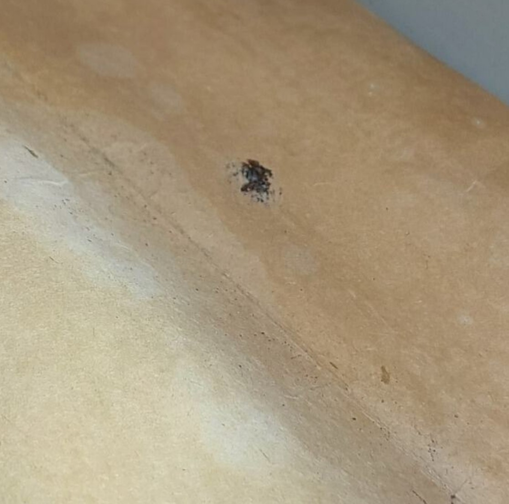
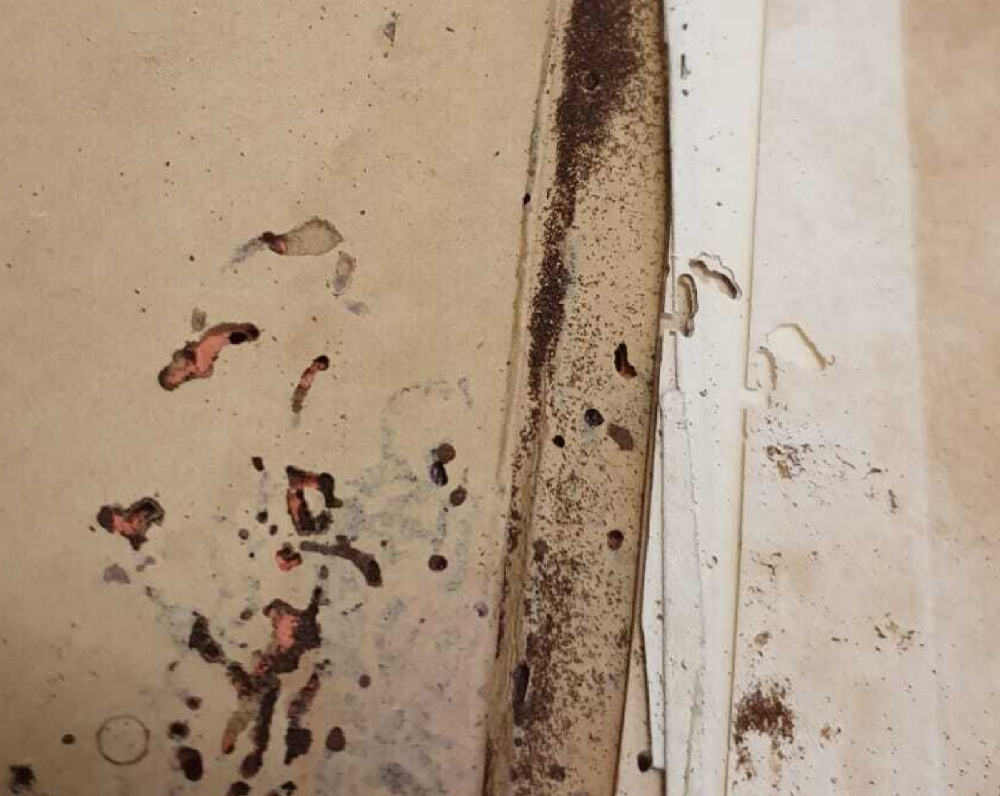

Concentrated area of frass
Frass may also be accompanied by extensive losses caused by pest damage
Frass
Description
Frass is a scientific word for insect excrements. It is also often accompanied by signs of pest damage.
Treatment Notes
- If there is a possibility of active infestation, send for anoxic treatment
- Surface cleaning to remove the frass
Materials Affected
Paper, Books, Textile, Metal